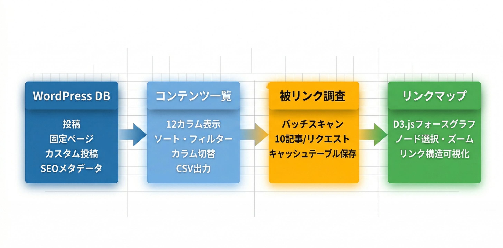

Kashiwazaki SEO All Content Lister マニュアル

WordPressサイト内の全コンテンツ（投稿・固定ページ・カスタム投稿タイプ）を一覧表示し、ソート・フィルター・CSV出力・被リンク調査・リンクマップ可視化を提供する管理ツールです。SEOプラグインのメタデータ（Yoast SEO、Rank Math等）との連携にも対応しています。
本プラグインはWordPress管理画面内で動作する管理者向けのコンテンツ監査ツールです。フロントエンド（公開ページ）には一切影響を与えず、構造化データの出力やmetaタグの生成は行いません。サイト内のコンテンツとリンク構造を俯瞰的に把握し、SEO改善のための分析作業を効率化することを目的としています。
主要機能
コンテンツ一覧
全投稿タイプを横断的に一覧表示。12カラム対応、ソート・フィルター・カラム表示切替・CSV出力機能を搭載。
被リンク調査
サイト内の全記事をバッチスキャンし、各ページへの内部リンク数を自動集計。結果はカスタムテーブルにキャッシュ。
リンクマップ
D3.jsによるフォースグラフで内部リンク構造を視覚化。ノード選択・ズーム・ドラッグ操作に対応。

目次
- 概要 - プラグインの概要と主要機能の紹介
- インストール・初期設定 - インストール手順と初期設定の方法
- コンテンツ一覧 - コンテンツ一覧の使い方とCSV出力
- 被リンク調査・リンクマップ - 被リンクスキャンとD3.jsリンクマップ
- トラブルシューティング - よくある問題と解決方法
SEO / GEO における強み
本プラグインはフロントエンドへの出力や構造化データの生成は行いませんが、管理画面上でのコンテンツ監査を通じて、SEOおよびGEO（Generative Engine Optimization）の改善に役立つ情報を提供します。
コンテンツ監査によるSEO改善
コンテンツ一覧では、SEOプラグイン（Yoast SEO、All in One SEO、Rank Math、SEOPress、Kashiwazaki SEO）から取得したメタディスクリプションとフォーカスキーワードを一括で確認できます。これにより、メタディスクリプションやフォーカスキーワードが未設定のページを素早く特定し、対策の優先順位を判断する際に活用できます。
内部リンク構造の可視化
リンクマップ機能は、D3.jsのフォースグラフによってサイト内の内部リンク構造を視覚的に表示します。これにより、他のページからリンクされていない孤立ページ（オーファンページ）の発見や、内部リンクが集中しているページの把握が可能になります。内部リンク構造の最適化は、検索エンジンのクロール効率の向上に寄与すると考えられます。
データ駆動型のSEO監査
CSV出力機能により、コンテンツ一覧のデータを外部ツール（スプレッドシートやBIツール等）でさらに詳細に分析することが可能です。投稿タイプ・ステータス・カテゴリー・被リンク数などの情報を組み合わせることで、データに基づいたSEO施策の立案を支援します。
GEOへの応用可能性
GEO（Generative Engine Optimization）の観点では、AIクローラーがサイト構造を効率的に理解できるよう、内部リンク構造を整理することが重要とされています。本プラグインのリンクマップ機能で内部リンク構造を把握し、孤立ページの解消やリンク階層の最適化を行うことで、サイトアーキテクチャの改善に役立てることができます。
動作要件
- WordPress 5.0 以上
- PHP 7.2 以上